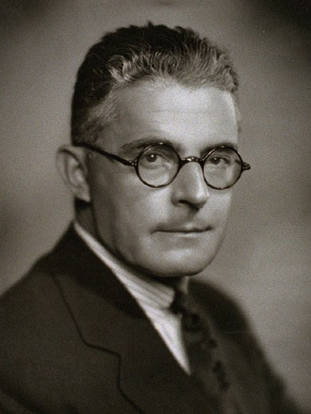

¿Qué es el conductismo?
El conductismo es una rama de la psicología que trata de entender, explicar y predecir el comportamiento humano y animal en base a los estímulos presentes en su entorno. No cree en la personalidad y no interviene en la parte emocional. El objetivo es conseguir una conducta determinada. Los conductistas tienden a concebir a los seres vivos como “tabulas rasas” cuya conducta está determinada por los refuerzos y castigos que reciban más que por predisposiciones internas. El comportamiento, por tanto, no depende principalmente de fenómenos internos, como los instintos o los pensamientos (que no dejan de ser, por otra parte, conductas encubiertas) sino más bien del entorno, y no podemos separar ni la conducta ni el aprendizaje del contexto en que tienen lugar.
Dentro de los paradigmas psicoeducativos, el conductista es uno de los que cuenta con mayor tradición dentro de la disciplina. El paradigma está regulado básicamente por la hipótesis de extrapolación-traducción, retomando los principios y leyes empíricas de la investigación básica del análisis experimental de la conducta.
El conductismo, desde sus inicios, aparentemente rompía radicalmente con muchos de los esquemas de la Psicología precedente, aunque a decir verdad existían importantes antecedentes dentro de la Psicología los cuales fueron tomados por los conductistas como base sólida para su trabajo teórico- metodológico. Finalmente hay que señalar que para los conductistas, a pesar de que en ciertos programas de aplicación transgredieron esto que vamos a decir, refieren que la enseñanza debe estar basada en consecuencias positivas (reforzamiento positivo) y no en procedimientos de control aversivo (como el castigo y otros).
Personajes importantes del conductismo
Iván Pávlov
Iván Petrovich Pávlov fue un fisiólogo ruso muy conocido por sus experimentos con perros, que dieron lugar a lo que hoy en día se conoce como condicionamiento clásico. El condicionamiento clásico o pavloviano es el tipo de aprendizaje asociativo más básico, en el que un organismo responde a un estímulo ambiental, originariamente neutro, con una respuesta automática o refleja.
Es conocido por sus experimentos con perros. Su primera intención no era la de estudiar el aprendizaje, sino la salivación de los canes. Al realizar sus primeros experimentos, lo que le llamó mucho la atención era que, tras repetidos ensayos, los perros segregaban la saliva incluso ante su presencia (la de Pávlov), independientemente de que le diera de comer o no. Esto ocurría porque los animales habían aprendido que cuando Pávlov entraba por la puerta iban a recibir comida en cualquier momento. A partir de este descubrimiento, el fisiólogo ideó una serie de experimentos en los que hacía sonar una campana justo antes de entregarle la comida al perro para medir la producción de la saliva. Pávlov descubrió que una vez que los canes eran entrenados para asociar el sonido de la campana con los alimentos, producirían saliva aunque no estuviera presente el alimento. Es decir, que la campana hacía que se produjera la salivación igual que cuando la comida estaba presente. El experimento demostró que la respuesta fisiológica de los perros, la salivación, se había asociado al estímulo de la campana.
Frederic Skinner
Burrhus Frederic Skinner fue un psicólogo estadounidense. Obtuvo el doctorado en psicología por la Universidad de Harvard en 1931, y continuó sus investigaciones en la misma universidad como asistente de laboratorio de biología con el profesor Crozier; en 1936 empezó a trabajar como profesor en la Universidad de Minnesota, donde permaneció nueve años.
Entre sus grandes aportes se encuentra el condicionamiento operante, Skinner no estaba conforme con las respuestas que logró Pávlov, este creía que el condicionamiento simple podía ser útil en ciertos casos, pero descartaba la posibilidad de que la conducta pudiera ser explicada solo a través de este mecanismo (la clave del condicionamiento simple estaba en asociar estímulos entre sí). Skinner centro toda su atención en las acciones que realiza un individuo y también en las consecuencias de estas acciones. El aprendizaje a partir de las consecuencias que tiene el modo en el que se interactúa con el mundo era el principal mecanismo de modificación de la conducta. Tanto los seres humanos como los animales estamos realizando siempre todo tipo de acciones, y estas tienen siempre una consecuencia para nosotros, que recibimos en forma de estímulos. Esta asociación entre lo que hacemos y lo que notamos que son las consecuencias de nuestras acciones son el fundamento del condicionamiento operante, nosotros esto lo consideramos como una experiencia ya sea buena o mala.
Skinner a diferencia de otros conductistas si creía que los procesos mentales podrían ser útiles en la psicología. Y consideraba todo aquello a lo que se le suele llamar "proceso mental" era en realidad una forma de conducta más, algo que se pone en marcha para hacer que el ajuste entre nuestras acciones y las consecuencias esperadas sea óptimo.
Edward Thordike
Edward Thordike fue un psicólogo y pedagogo estadounidense, uno de los pioneros de la psicología del aprendizaje. Estudió en la Universidad Wesleyan, donde se licenció en 1895; después completó su formación en Harvard y Columbia, y en esta última institución obtuvo el doctorado en 1898 bajo la dirección de James Cattell.
Para desarrollar sus investigaciones, Edward Thorndike se apoyó en el estudio de animales, en concreto gatos, y en la utilización de herramientas como la "caja rompecabezas" o "caja-problema", en la que el animal debía accionar un mecanismo para poder salir de ella. El resultado de sus estudios fue la elaboración de la teoría del aprendizaje por ensayo y error. Según Thorndike, el proceso de aprendizaje se puede reducir a varias leyes: la ley de la disposición, que establece la preparación de las conducciones neurológicas en la conexión estímulo-respuesta; la ley del ejercicio, o del uso y desuso, en la que la conexión estímulo-respuesta se refuerza con la práctica o a la inversa; y la ley del efecto, la más importante de ellas, que describe si una consecuencia percibida como positiva (y por tanto, satisfactoria) ocurre justo después de una acción, es más posible que esa misma acción vuelva a producirse. En cambio, si después de una acción llega un estímulo desagradable o doloroso, las posibilidades de repetir esa acción disminuirían. Por otro lado, esta ley fue propuesta tanto para describir el comportamiento animal como el de los seres humanos. Una de las características del conductismo, que Thorndike ayudó a inaugurar, era que al restar importancia o incluso negar la funcionalidad de la consciencia en los actos sus esquemas podían ser aplicados a muchas formas de vida, prácticamente todas aquellas capaces de aprender: ratones, moluscos, etc.
John Broadus Watson
John Broadus Watson fue un psicólogo estadounidense, fundador del conductismo. Aunque se trasladó a Chicago para estudiar filosofía, atraído por John Dewey y el pragmatismo, muy pronto comenzó a interesarse por la psicología. En 1903 obtuvo el doctorado y empezó a trabajar como asistente instructor en psicología animal.
Watson se interesó en el estudio de Pávlov e introdujo el condicionamiento clásico en el sistema educativo en Estados Unidos. Además este realizó un experimento el cuál fue llamado El experimento del pequeño Albert , consistía en probar el condicionamiento clásico en un bebé de 8 meses. Albert fue llevado al laboratorio donde se le presentaba una rata blanca. Cuando el pequeño se acercaba para tocarla, Watson golpeaba una barra metálica con un martillo. Como consecuencia del fuerte golpe, el bebé se alteraba y fruto del miedo se ponía a llorar. Watson repitió este proceso una y otra vez, y observó que, tras distintos ensayos, el pequeño Albert se asustaba simplemente por el hecho de ver la rata blanca. Albert había aprendido que cada vez que la rata aparecía, el martillo golpearía la tabla metálica. Es decir, que anticipaba el fuerte golpe. Ver video
Rol del docente en el conductismo
Según Keller (1978), el maestro debe verse como un ingeniero educacional y un administrador de contingencias. Un maestro eficaz que debe de ser capaz de manejar hábilmente los recursos tecnológicos conductuales de este enfoque (principios, procedimientos, programas conductuales), para lograr con éxito niveles de eficiencia en su enseñanza y sobre todo en el aprendizaje de sus alumnos.
Dentro de los principios deber manejar especialmente los referidos al reforzamiento positivo y evitar en la medida de lo posible los basados en el castigo (Skinner, 1970).
Rol del estudiante en el conductismo
El alumno en el paradigma conductista, esta restringido de aprender libremente, debe mantener una conducta aceptable para no ser castigado, además debe conformarse y aceptar lo que el profesor le enseña.
Para lograr aprender algo debe repetir una y otra vez hasta lograr memorizar una intrucción.
El conductismo en la educación
El conductismo en la educación es muy importante ya que nos muestra las diferentes formas de enfrentar cada dificultad que tenemos al enseñar alguna cosa determinada, nos ayuda a comprender y entender las dificultades de los niños en aprender y cómo podemos ayudarlos a que puedan cumplir cada uno de sus objetivos superando sus obstáculos con ayuda del profesor.
Aportes
- La teoría conductista del aprendizaje tiene una larga tradición e intervención y es una de las que más proyección de aplicación ha logrado en el ámbito educativo, se ha caracterizado por su interés en hacer de la psicología una ciencia rigurosa.
- Su más importante aporte ha sido haber logrado cambiar el propósito principal de la psicología hacia la solución de verdaderas problemáticas relacionadas con la conducta humana, igualmente al conceptualizar el aprendizaje como una forma de modificación de conducta, los procedimientos para tal fin desarrollados por los conductistas han probado ser de gran utilidad para muchos maestros y escuelas durante las últimas generaciones.
- El conductismo solucionó el problema de mente y cuerpo, deshaciéndose de la mente por completo. La actividad determinista del conductismo, así como su actitud mecanicista y profundamente científica, frente al estudio del comportamiento humano, influyeron no sólo en la psicología, sino en la ciencia en general y aportó increíbles progresos científicos en todas las ramas del conocimiento. La Literatura, el Arte y la Filosofía se volvieron a temas más realistas y materiales.
Ventajas
- Puntualiza en el desarrollo de la tecnología educativa, despertando el interés por la investigación educativa.
- Ofrece estrategias para lograr una secuencia programada de los actos educativos.
- Dado la posibilidad de planificar, organizar y regular la conducta humana.
Desventajas
- Analiza la conducta, pero no se tiene en cuenta el estudio de la mente ya que es vista como algo inaccesible dentro del sujeto.
- Descontextualiza los resultados de la experiencia con animales al análisis de la conducta humana.
- Los modelos educativos que se rigen por el método conductista están relacionados directamente con las deficiencias que se mencionaron anteriormente.
Características del conductismo en la educación
- Ubica al docente en el centro del proceso enseñanza-aprendizaje.
- Considera al alumno como una tabla rasa: hay que llenarlos de conocimientos como si se levantara una pared de ladrillos.
- Se desconocen los procesos mentales del estudiante, o por lo menos, no se les toma en cuenta por la imposibilidad de hacerlos visibles.
- El grado de avance de los alumnos se mide a través de los resultados observables de su conducta.
Ideas Principales
- El mayor legado del conductismo consiste en sus aportaciones científicas sobre el comportamiento humano, en sus esfuerzos por resolver problemas relacionados con la conducta humana y el modelamiento de conductas, que si bien no pueden solucionarse totalmente a base de "premio-castigo", nos enseña que los usos de refuerzos pueden fortalecer conductas apropiadas y su desuso debilitar las no deseadas. La asignación de calificaciones, recompensas y castigos son también aportaciones de esta teoría
- Los principios de las ideas conductistas pueden aplicarse con éxito en la adquisición de conocimientos memorísticos, que suponen niveles primarios de comprensión, como por ejemplo el aprendizaje de las capitales del mundo o las tablas de multiplicar. Sin embargo, esto presenta una limitación importante: que la repetición no garantiza asimilación de la nueva conducta, sino sólo su ejecución (sabe multiplicar, pero no sabe cuándo debe hacerlo, se sabe las tablas de multiplicar, pero no sabe resolver un problema en el que tiene que utilizar la multiplicación), esto indica que la situación aprendida no es fácilmente traspasable a otras situaciones.
- También los principios conductistas pueden aplicarse eficazmente en el entrenamiento de adultos para determinados trabajos, donde la preparación "estímulo-respuesta" es útil e incluso imprescindible, por ejemplo: preparar maquinistas de tren o pilotos para afrontar una situación de emergencia, en la que cual la rapidez de respuestas es una de las exigencias para el éxito y lleva consigo un adiestramiento estímulo- respuesta.
Las primeras utilizaciones educativas de los ordenadores se basan en la enseñanza programada de Skinner, consistiendo en la "presentación secuencial de preguntas y en la sanción correspondiente de las respuestas de los alumnos" (Martí, 1992, 66). Los primeros programas se basaban en texto o en objetos mecánicos llamados máquinas de enseñar y consistían en la presentación secuencial de preguntas y en el refuerzo positivo o negativo dependiendo de la respuesta de los alumnos. A este uso del ordenador se lo denominaba EAO (Educación Asistida por Ordenador o CAI en inglés, Computer Assisted Instruction). Para lograr su objetivo, un programa instructivo exige que los objetivos generales de la instrucción sean definidos de tal modo que su logro pueda ser medido.
Conclusión
En el conductismo encontramos uno de sus grandes aportes, hacernos ver como el aprendizaje no tan sólo escolar sino también de la vida en general depende de los efectos de las conductas en el medio.